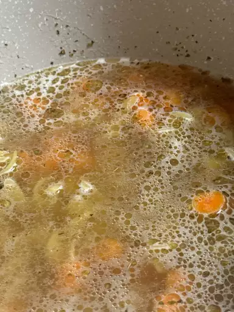

Chicken Noodle Soup

Description
Getting sick? Or just sick of eating garbage all the time? Either way, go to bed, but first make this chicken noodle soup for your health. Actually, ideally you could find a way to cook this soup all from the comfort of your bed. Okay, these directions will be tailored to a bed-ridden chef! Feel better, and you should really be taking more vitamin C!
Ingredients
- A Doctor's Note excusing you from all professional obligations
- 1 Can Campbell's Chicken Noodle Soup™
- Microwave
Directions
- Using a spoon, greedily glob a generous amount of cottage cheese into a bowl.
- With the same spoon, schmear some of the extra cottage cheese onto a piece of toast.
- There you have it! Perfectly made Caprese Salad!

Return Home